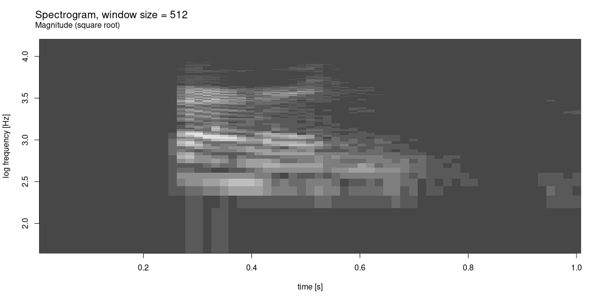
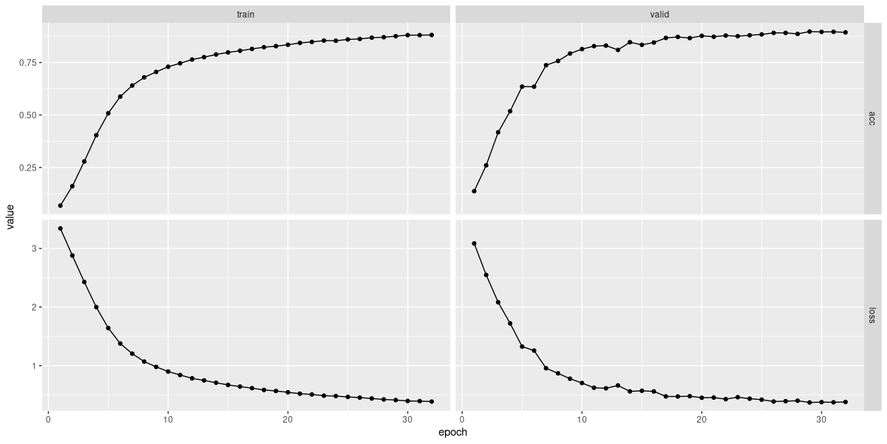
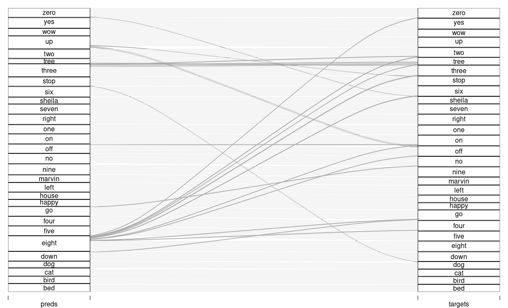
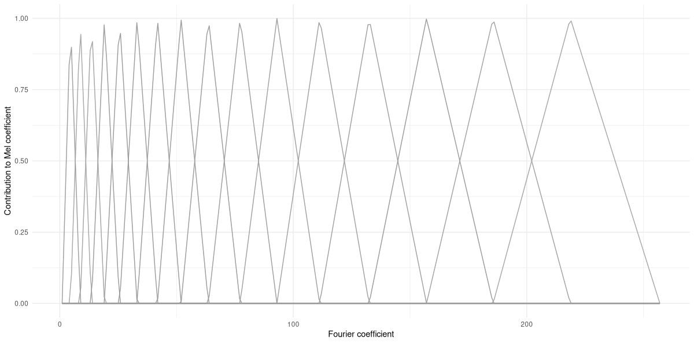
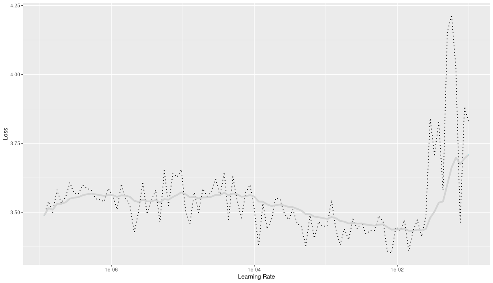
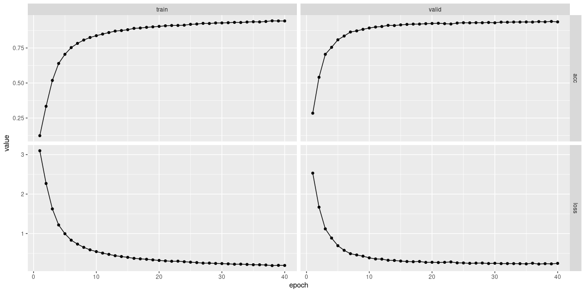

library(torch)
library(torchaudio)
library(luz)
ds <- speechcommand_dataset(
root = "~/.torch-datasets",
url = "speech_commands_v0.01",
download = TRUE
)
ds$classes22 Audio classification
In our final chapter on deep learning, we look at the fascinating topic of audio signals. And here, part of my goal is to convince you (if you aren’t convinced yet) of the utmost importance of domain knowledge. Let me explain.
Far too often, machine learning is seen as a magical device that, when employed in a technically correct way, will yield great results, however little the model developer (or user) may know about the domain in question. In previous chapters, we’ve already seen that this is not true, not even in the case of seemingly “simple” datasets. Essentially, we saw that pre-processing matters – always – and that to adequately pre-process data, we need to know what they’re supposed to represent. However, techniques of incorporating domain knowledge into the machine learning workflow can go a lot further. This is a topic that, definitely, deserves a book of its own. But this chapter hopes to offer something like a glimpse ahead: With audio signals, we will encounter a technique that, beyond being of great appeal in itself, has the strength of generalizing to a wide range of applications that deal with comparable data.
Let’s start by characterizing the task.
22.1 Classifying speech data
The speech command dataset (Warden (2018)) comes with torchaudio, a package that does for auditory data what torchvision does for images and video. As of this writing, there are two versions; the one provided by torchaudio is number one. In that version, the dataset holds recordings of thirty different, one- or two-syllable words, uttered by different speakers; there are about 65,000 audio files overall. The task is to predict, from the audio recording, which word was spoken.
To see what is involved, we download and inspect the data.
[1] "bed" "bird" "cat" "dog" "down" "eight"
[7] "five" "four" "go" "happy" "house" "left"
[32] " marvin" "nine" "no" "off" "on" "one"
[19] "right" "seven" "sheila" "six" "stop" "three"
[25] "tree" "two" "up" "wow" "yes" "zero" Picking a sample at random, we see that the information we’ll need is contained in four properties: waveform, sample_rate, label_index, and label.
The first, waveform, will be our predictor.
sample <- ds[2000]
dim(sample$waveform)[1] 1 16000Individual tensor values are centered at zero, and range between -1 and 1. There are 16,000 of them, reflecting the fact that the recording lasted for one second, and was registered at (or has been converted to, by the dataset creators) a rate of 16,000 samples per second. The latter information is stored in sample$sample_rate:
sample$sample_rate[1] 16000All recordings have been sampled at the same rate. Their length almost always equals one second; the – very – few ones that are minimally longer we can safely truncate.
Finally, the target is stored, in integer form, in sample$label_index, with the corresponding word available from sample$label:
sample$label
sample$label_index[1] "bird"
torch_tensor
2
[ CPULongType{} ]How does this audio signal “look” (fig. 22.1)?
library(ggplot2)
df <- data.frame(
x = 1:length(sample$waveform[1]),
y = as.numeric(sample$waveform[1])
)
ggplot(df, aes(x = x, y = y)) +
geom_line(size = 0.3) +
ggtitle(
paste0(
"The spoken word \"", sample$label, "\": Sound wave"
)
) +
xlab("time") +
ylab("amplitude") +
theme_minimal()
What we see is a sequence of amplitudes, reflecting the sound wave produced by someone saying “bird”. Put differently, we have here a time series of “loudness values”. Even for experts, guessing which word resulted in those amplitudes is an impossible task. This is where domain knowledge is relevant. The expert may not be able to make much of the signal in this representation; but they may know a way to more meaningfully represent it.
At this point, you may be thinking: Right; but just because the task is impossible for human beings it need not be impossible for a machine! After all, a neural network and a person process information very differently. Maybe an RNN, trained on these waves, can learn to correctly map them to a set of words!
That could indeed be – you may want to try – but it turns out there is a better way, one that both appeals to our, human, desire for understanding and uses deep learning in a most beneficient way.
This better way is owed to a mathematical fact that – for me, at least – never ceases to inspire awe and wonder.
22.2 Two equivalent representations
Imagine that instead of as a sequence of amplitudes over time, the above wave were represented in a way that had no information about time at all. Next, imagine we took that representation and tried to recover the original signal. For that to be possible, the new representation would somehow have to contain “just as much” information as the wave we started from. That “just as much” is obtained by the Fourier Transform, and it consists of the magnitudes and phase shifts of the different frequencies that make up the signal. In part three, we’ll play around quite a bit with the Fourier Transform, so here I’ll keep the introduction brief. Instead, I’ll focus on the elegant symbiosis that will result, once we’ve arrived at the final pre-processing step. But we’re not quite there yet.
To start, how does the Fourier-transformed version of the “bird” sound wave look? We obtain it by calling torch_fft_fft() (where fft stands for Fast Fourier Transform):
dft <- torch_fft_fft(sample$waveform)
dim(dft)[1] 1 16000The length of this tensor is the same; however, its values are not in chronological order. Instead, they represent the Fourier coefficients, corresponding to the frequencies contained in the signal. The higher their magnitude, the more they contribute to the signal (fig. 22.2):
mag <- torch_abs(dft[1, ])
df <- data.frame(
x = 1:(length(sample$waveform[1]) / 2),
y = as.numeric(mag[1:8000])
)
ggplot(df, aes(x = x, y = y)) +
geom_line(size = 0.3) +
ggtitle(
paste0(
"The spoken word \"",
sample$label,
"\": Discrete Fourier Transform"
)
) +
xlab("frequency") +
ylab("magnitude") +
theme_minimal()
From this, alternate, representation, we could go back to the original sound wave by taking the frequencies present in the signal, weighting them according to their coefficients, and adding them up. (That opposite direction is called the Inverse Fourier Transform, and available in torch as torch_fft_ifft().)
This, in itself, is incredibly fascinating; but how does it help us with our task of classifying audio signals? Were we to work with the sound waves themselves, we’d feed them into an RNN. With frequencies, there is no recurrence relation; so RNNs are not an option. We could use a feed-forward neural network, then. But there is reason to expect this to work particularly well.
22.3 Combining representations: The spectrogram
In fact, what really would help us is a synthesis of both representations; some sort of “have your cake and eat it, too”. What if we could divide the signal into small chunks, and run the Fourier Transform on each of them? As you may have guessed from this leadup, this indeed is something we can do; and the representation it creates is called the spectrogram.
With a spectrogram, we still keep some time-domain information – some, since there is an unavoidable loss in granularity. On the other hand, for each of the time segments, we learn about their spectral composition. There’s an important point to be made, though. The resolutions we get in time versus in frequency, respectively, are inversely related. If we split up the signals into many chunks (called “windows”), the frequency representation per window will not be very fine-grained. Conversely, if we want to get better resolution in the frequency domain, we have to choose longer windows, thus losing information about how spectral composition varies over time. It seems, then, that all we can do is eat half a cake, and take pleasure in the sight of the other half.
Well, all said so far is correct; but as you’ll see, this is far less of a problem than it may seem now.
Before we unveil the mystery, though, let’s create and inspect such a spectrogram for our example signal. In the following code snippet, the size of the – overlapping – windows is chosen so as to allow for reasonable granularity in both the time and the frequency domain. We’re left with sixty-three windows, and, for each window, obtain two hundred fifty-seven coefficients:
fft_size <- 512
window_size <- 512
power <- 0.5
spectrogram <- transform_spectrogram(
n_fft = fft_size,
win_length = window_size,
normalized = TRUE,
power = power
)
spec <- spectrogram(sample$waveform)$squeeze()
dim(spec)[1] 257 63We can display the spectrogram visually (fig. 22.3):
bins <- 1:dim(spec)[1]
freqs <- bins / (fft_size / 2 + 1) * sample$sample_rate
log_freqs <- log10(freqs)
frames <- 1:(dim(spec)[2])
seconds <- (frames / dim(spec)[2]) *
(dim(sample$waveform$squeeze())[1] / sample$sample_rate)
image(x = as.numeric(seconds),
y = log_freqs,
z = t(as.matrix(spec)),
ylab = 'log frequency [Hz]',
xlab = 'time [s]',
col = hcl.colors(12, palette = "Light grays")
)
main <- paste0("Spectrogram, window size = ", window_size)
sub <- "Magnitude (square root)"
mtext(side = 3, line = 2, at = 0, adj = 0, cex = 1.3, main)
mtext(side = 3, line = 1, at = 0, adj = 0, cex = 1, sub)
We know that we’ve lost some resolution, in both time and frequency. By displaying the square root of the coefficients’ magnitudes, though – and thus, enhancing sensitivity – we were still able to obtain a reasonable result. (With the Light grays color scheme, brighter shades indicate higher-valued coefficients; darker ones, the opposite.)
Finally, let’s get back to the crucial question. If this representation is, by necessity, a compromise – why, then, would we want to employ it? This is where we take the deep learning perspective. The spectrogram is a two-dimensional representation: an image. With images, we have access to a rich reservoir of techniques and architectures – among all areas deep learning has been successful in, image recognition still stands out. Soon, you’ll see that for this task, fancy architectures are not even needed; a straightforward convnet will do a very good job.
22.4 Training a model for audio classification
The plan is as follows. We’ll end-to-end train a baseline model, which already will be performing very well. Nevertheless, we’ll try out two ideas, to see if we can improve on that baseline. Should it turn out not to be the case, we’ll still have learned about some important techniques.
22.4.1 Baseline setup: Training a convnet on spectrograms
We start by creating a torch::dataset() that, starting from the original speechcommand_dataset(), computes a spectrogram for every sample.
spectrogram_dataset <- dataset(
inherit = speechcommand_dataset,
initialize = function(...,
pad_to = 16000,
sampling_rate = 16000,
n_fft = 512,
window_size_seconds = 0.03,
window_stride_seconds = 0.01,
# power = 2 is default for
# transform_spectrogram()
# we stay with the default for now,
# but will make use of this option later
power = 2,
# this too will be explained later
n_mels = 0) {
self$pad_to <- pad_to
self$window_size_samples <- sampling_rate *
window_size_seconds
self$window_stride_samples <- sampling_rate *
window_stride_seconds
self$power <- power
if (n_mels == 0) {
self$spectrogram <- transform_spectrogram(
n_fft = n_fft,
win_length = self$window_size_samples,
hop_length = self$window_stride_samples,
normalized = TRUE,
power = self$power
)
} else {
self$spectrogram <- transform_mel_spectrogram(
n_fft = n_fft,
win_length = self$window_size_samples,
hop_length = self$window_stride_samples,
normalized = TRUE,
power = self$power,
n_mels = n_mels
)
}
super$initialize(...)
},
.getitem = function(i) {
item <- super$.getitem(i)
x <- item$waveform
# make sure all samples have the same length (57)
# shorter ones will be padded,
# longer ones will be truncated
x <- nnf_pad(x, pad = c(0, self$pad_to - dim(x)[2]))
x <- x %>% self$spectrogram()
if (is.null(self$power)) {
# there is an additional dimension now,
# in position 4,
# that we want to appear in front
# (as a second channel)
x <- x$squeeze()$permute(c(3, 1, 2))
}
y <- item$label_index
list(x = x, y = y)
}
)As always, we immediately check if all is well:
ds <- spectrogram_dataset(
root = "~/.torch-datasets",
url = "speech_commands_v0.01",
download = TRUE
)
dim(ds[1]$x)
ds[1]$y[1] 1 257 101
torch_tensor
1
[ CPULongType{} ]Next, we split up the data, and instantiate the dataset() and dataloader() objects.
train_ids <- sample(
1:length(ds),
size = 0.6 * length(ds)
)
valid_ids <- sample(
setdiff(
1:length(ds),
train_ids
),
size = 0.2 * length(ds)
)
test_ids <- setdiff(
1:length(ds),
union(train_ids, valid_ids)
)
batch_size <- 128
train_ds <- dataset_subset(ds, indices = train_ids)
train_dl <- dataloader(
train_ds,
batch_size = batch_size, shuffle = TRUE
)
valid_ds <- dataset_subset(ds, indices = valid_ids)
valid_dl <- dataloader(
valid_ds,
batch_size = batch_size
)
test_ds <- dataset_subset(ds, indices = test_ids)
test_dl <- dataloader(test_ds, batch_size = 64)
b <- train_dl %>%
dataloader_make_iter() %>%
dataloader_next()
dim(b$x)[1] 128 1 257 101Like I said, the model is a straightforward convnet, with dropout and batch normalization.
model <- nn_module(
initialize = function() {
self$features <- nn_sequential(
nn_conv2d(1, 32, kernel_size = 3),
nn_batch_norm2d(32),
nn_relu(),
nn_max_pool2d(kernel_size = 2),
nn_dropout2d(p = 0.2),
nn_conv2d(32, 64, kernel_size = 3),
nn_batch_norm2d(64),
nn_relu(),
nn_max_pool2d(kernel_size = 2),
nn_dropout2d(p = 0.2),
nn_conv2d(64, 128, kernel_size = 3),
nn_batch_norm2d(128),
nn_relu(),
nn_max_pool2d(kernel_size = 2),
nn_dropout2d(p = 0.2),
nn_conv2d(128, 256, kernel_size = 3),
nn_batch_norm2d(256),
nn_relu(),
nn_max_pool2d(kernel_size = 2),
nn_dropout2d(p = 0.2),
nn_conv2d(256, 512, kernel_size = 3),
nn_batch_norm2d(512),
nn_relu(),
nn_adaptive_avg_pool2d(c(1, 1)),
nn_dropout2d(p = 0.2)
)
self$classifier <- nn_sequential(
nn_linear(512, 512),
nn_batch_norm1d(512),
nn_relu(),
nn_dropout(p = 0.5),
nn_linear(512, 30)
)
},
forward = function(x) {
x <- self$features(x)$squeeze()
x <- self$classifier(x)
x
}
)What is a good learning rate to train this model (fig. 22.4)?
model <- model %>%
setup(
loss = nn_cross_entropy_loss(),
optimizer = optim_adam,
metrics = list(luz_metric_accuracy())
)
rates_and_losses <- model %>%
lr_finder(train_dl)
rates_and_losses %>% plot()
Based on the plot, I decided to use 0.01 as a maximal learning rate.
fitted <- model %>%
fit(train_dl,
epochs = 50, valid_data = valid_dl,
callbacks = list(
luz_callback_early_stopping(patience = 3),
luz_callback_lr_scheduler(
lr_one_cycle,
max_lr = 1e-2,
epochs = 50,
steps_per_epoch = length(train_dl),
call_on = "on_batch_end"
),
luz_callback_model_checkpoint(path = "models_baseline/"),
luz_callback_csv_logger("logs_baseline.csv")
),
verbose = TRUE
)
plot(fitted)
Model training stopped after thirty-two epochs (fig. 22.5). Here is an excerpt from the logs:
"epoch","set","loss","acc"
1,"train",3.34194613126368,0.0687577255871446
1,"valid",3.08480389211692,0.137438195302843
2,"train",2.87943273042542,0.161155747836836
2,"valid",2.54789054393768,0.260275030902349
3,"train",2.42715575726204,0.279048207663782
3,"valid",2.08232365753136,0.417567985166873
...
...
30,"train",0.397343056799929,0.880098887515451
30,"valid",0.3777267414273,0.895395550061805
31,"train",0.395276123743042,0.880073135558302
31,"valid",0.375300966641482,0.895781829419036
32,"train",0.387298851523524,0.880691182529872
32,"valid",0.379925572989034,0.89323238566131With thirty classes, an accuracy of about eighty-nine percent seems decent. We double-check on the test set:
evaluate(fitted, test_dl)loss: 0.3776
acc: 0.8898An interesting question is which words get confused most often. (Of course, even more interesting is how error probabilities are related to features of the spectrograms – but this we have to leave to the true domain experts.)
A nice way of displaying the confusion matrix is to create an alluvial plot (fig. 22.6). We see the predictions, on the left, “flow into” the target slots. (Target-prediction pairs less frequent than a thousandth of test set cardinality are hidden.)
preds_baseline <- predict(fitted, test_dl)
preds_baseline <-
torch_argmax(preds_baseline, dim = 2) %>%
as.numeric()
test_dl <- dataloader(
test_ds,
batch_size = length(test_ds)
)
b <- test_dl %>%
dataloader_make_iter() %>%
dataloader_next()
targets_baseline <- b$y$to(device = "cpu") %>%
as.numeric()
df_baseline <- data.frame(
preds = preds_baseline,
targets = targets_baseline
)
classes <- speechcommand_ds$classes
df <- df_baseline %>%
mutate(correct = preds == targets) %>%
mutate(
preds = classes[preds],
targets = classes[targets]
) %>%
count(preds, targets, correct)
library(alluvial)
alluvial(
df %>% select(preds, targets),
freq = df$n,
col = ifelse(df$correct, "#d1d1d1", "#aaaaaa"),
border = ifelse(df$correct, "#d1d1d1", "#aaaaaa"),
hide = df$n < nrow(df_baseline) / 1000
)
That’s it for the baseline approach. Let’s see if we can do still better.
22.4.2 Variation one: Use a Mel-scale spectrogram instead
In classical speech recognition, people did not necessarily limit pre-processing to the Fourier Transform and spectrograms. Various other steps used to – or could – follow, some of which seem obsolete once neural networks are being used. There is at least one technique, though, where it’s hard to devine a priori whether it will help or not.
Due to the way our hearing system is built, we human beings don’t perceive differences equally accurately across the frequency range. For example, while the distances between 440 Hz and 480 Hz on the one hand, and 8000 Hz and 8040 Hz on the other, are the same mathematically, the latter will be much harder to perceive. (This is no different with other modes of perception – to tell the difference between one kilogram and two kilograms is easy, while doing the same for fourteen versus fifteen kilograms is less so.
To accommodate this physiological precondition, one sometimes converts the Fourier coefficients to the so-called Mel scale. Various formulae exist that do this; in one or the other way, they always include taking the logarithm. But in practice, what usually is done is to create overlapping filters that aggregate sets of Fourier coefficients into a new representation, the Mel coefficients. In the low-frequency range, the filters are narrow, and subsume only very few Fourier coefficients. Then, they successively become wider, until, in the very-high frequency range, a wide range of Fourier coefficients get to contribute to a single Mel value.
We can make this more concrete using a torch helper function, functional_create_fb_matrix() . What this function does is create a conversion matrix from Fourier- to Mel space:
c
fb <- functional_create_fb_matrix(
n_freqs = 257,
f_min = 0,
f_max = 8000,
n_mels = 16,
sample_rate = 16000
)
dim(fb)[1] 257 16In our application, we’ll use Mel spectrograms with one hundred twenty-eight coefficients; given that we’re training a convnet, we wouldn’t want to shrink spatial resolution too much. But visualization is more helpful when done with fewer filters – which is why, above, I’ve told torch to generate sixteen filters only. Here they are (fig. 22.7):
df <- as_tibble(as.matrix(fb)) %>%
rowid_to_column("x")
df %>%
pivot_longer(!x) %>%
ggplot(
aes(x = x, y = value, color = name, group = name)
) +
geom_line() +
xlab("Fourier coefficient") +
ylab("Contribution to Mel coefficient") +
theme_minimal() +
theme(legend.position = "None")
From this plot, it should make sense how Mel-scale transformation is designed to compensate for lower perceptual resolution in higher-frequency ranges.
Of course, in order to work with Mel spectrograms, you won’t need to generate filter banks yourself. For training, we’ll just replace transform_spectrogram() by transform_mel_spectrogram(). But sometimes, playing around with helper functions can significantly aid understanding. For example, using another low-levellish utility – functional_mel_scale() – we can take a set of Fourier coefficients, convert them to Mel scale, and compare.
Here, I’m taking the spectrogram for sample 2000 - our “bird” – and pick a time window of interest. I then use functional_mel_scale() to obtain the respective Mel-scale representation, and plot (fig. 22.8) the magnitudes of both sets of coefficients against each other (showing just the first half of the Fourier coefficients):
sample_spec <- ds[2000]$x
win_31 <- sample_spec[1, , 31]
mel_31 <- win_31$unsqueeze(2) %>%
functional_mel_scale(n_mel = 128)
df <- data.frame(
coefficient = 1:128,
fourier = as.numeric(win_31[1:128]),
mel = as.numeric(mel_31)
)
df %>%
pivot_longer(
!coefficient,
names_to = "type", values_to = "magnitude"
) %>%
ggplot(
aes(x = coefficient, y = magnitude, color = type)
) +
geom_line() +
theme_minimal()
Finally, before getting back to the task, let’s quickly verify that calling functional_mel_scale() is equivalent to constructing a filter bank manually and multiplying the resulting matrix with the Fourier coefficients. To do so, we now create a 257 x 128 matrix, and apply it to the spectrogram window we extracted above. The results should be equal (apart from small numerical errors):
fb <- functional_create_fb_matrix(
n_freqs = 257,
f_min = 0,
f_max = 8000,
n_mels = 128,
sample_rate = 16000
)
(fb$t()$matmul(win_31) - mel_31[1, , 1]) %>%
torch_max()torch_tensor
5.96046e-08
[ CPUFloatType{} ]Now that we have an idea of how Mel-scale transformation works, and possibly a gut feeling as to whether this will help training or not: Let’s actually find out. Necessary modifications are minimal; only the argument list to spectrogram_dataset() is concerned:
ds <- spectrogram_dataset(
root = "~/.torch-datasets",
url = "speech_commands_v0.01",
download = TRUE,
n_mels = 128
)Model as well as training code stay the same. Learning rate finder output also looked rather similar (fig. 22.9):

Using the same learning rate as previously, I saw training end after nineteen epochs (fig. 22.10).

Final validation accuracy was at about 0.86, minimally lower than for the baseline model.
"epoch","set","loss","acc"
1,"train",3.35417570164001,0.0639678615574784
1,"valid",3.03987254348456,0.142228059332509
2,"train",2.6629929004931,0.220874536464771
2,"valid",2.20017999761245,0.367815203955501
3,"train",2.03871287512623,0.400262669962917
3,"valid",1.56310861835293,0.559100741656366
...
...
17,"train",0.534631294167899,0.838715492377421
17,"valid",0.524456901585355,0.854063658838072
18,"train",0.526362751336659,0.840801400906469
18,"valid",0.58039141460961,0.839076019777503
19,"train",0.511069792840216,0.847059126493613
19,"valid",0.511746386686961,0.858544499381953So in this task, no improvement was seen through Mel transformation. But what matters is for us to be aware of this option, such that in other projects, we may give this technique a try.
For completeness, here’s double-checking against the test set.
evaluate(fitted, test_dl)loss: 0.5081
acc: 0.8555No surprise here, either. Interestingly though, this time the confusion matrix looks rather different, thus hinting at a change in inner workings (fig. 22.11). (To be sure, though, we’d have to run each version several times.)

Leaving further exploration to the experts, we proceed to the final alternative.
22.4.3 Variation two: Complex-valued spectograms
When introducing spectrograms, I focused on their two-dimensional structure: The Fourier Transform is performed independently for a set of (overlapping) windows, leaving us with a grid where time slices and Fourier coefficients are arranged in rows and columns. This grid, we found, can be treated as an image of sorts. What I didn’t expand on were the actual values contained in that grid. Fourier coefficients are complex-valued, and thus, if left alone would need to be plotted in two-dimensional space – and then, the spectrogram, in turn, would have to be three-dimensional. In practice, for display (and other) purposes, one often works with the magnitudes of the coefficients instead, or the squares of those magnitudes.
Maybe you’ve noticed that transform_spectrogram() takes an argument, power, which I haven’t commented on yet. This argument lets you specify whether you’d like squared magnitudes (power = 2, the default), absolute values (power = 1), any other positive value (such as 0.5, the one we used when displaying a concrete example) – or both real and imaginary parts of the coefficients (power = NULL). So far, we’ve always gone with the default. But we might well wonder whether a neural network could profit from the additional information contained in the “whole” complex number. After all, when reducing to magnitudes we lose the phase shifts for the individual coefficients, which could well contain usable information. In any case, it’s worth a try!
On the technical side, necessary modifications (again) are minimal. The call to spectrogram_dataset() now makes use of the power argument. Specifying power = NULL, we explicitly request both real and imaginary parts of the Fourier coefficients. The idea is to pass them to the model’s initial nn_conv2d() as two separate channels.
ds <- spectrogram_dataset(
root = "~/.torch-datasets",
url = "speech_commands_v0.01",
download = TRUE,
power = NULL
)
dim(ds[1]$x)[1] 2 257 101Correspondingly, the first convolutional module now is set up to work on two-channel inputs.
model <- nn_module(
initialize = function() {
self$features <- nn_sequential(
nn_conv2d(2, 32, kernel_size = 3),
nn_batch_norm2d(32),
nn_relu(),
nn_max_pool2d(kernel_size = 2),
nn_dropout2d(p = 0.2),
nn_conv2d(32, 64, kernel_size = 3),
nn_batch_norm2d(64),
nn_relu(),
nn_max_pool2d(kernel_size = 2),
nn_dropout2d(p = 0.2),
nn_conv2d(64, 128, kernel_size = 3),
nn_batch_norm2d(128),
nn_relu(),
nn_max_pool2d(kernel_size = 2),
nn_dropout2d(p = 0.2),
nn_conv2d(128, 256, kernel_size = 3),
nn_batch_norm2d(256),
nn_relu(),
nn_max_pool2d(kernel_size = 2),
nn_dropout2d(p = 0.2),
nn_conv2d(256, 512, kernel_size = 3),
nn_batch_norm2d(512),
nn_relu(),
nn_adaptive_avg_pool2d(c(1, 1)),
nn_dropout2d(p = 0.2)
)
self$classifier <- nn_sequential(
nn_linear(512, 512),
nn_batch_norm1d(512),
nn_relu(),
nn_dropout(p = 0.5),
nn_linear(512, 30)
)
},
forward = function(x) {
x <- self$features(x)$squeeze()
x <- self$classifier(x)
x
}
)Here is what I saw when running the learning rate finder (fig. 22.12):

This time, training went on for forty epochs.

Visually, the loss and accuracy curves for the validation set look smoother than in both other cases (fig. 22.13). Checking accuracies, we see:
"epoch","set","loss","acc"
1,"train",3.09768574611813,0.12396992171405
1,"valid",2.52993751740923,0.284378862793572
2,"train",2.26747255972008,0.333642356819118
2,"valid",1.66693911248562,0.540791100123609
3,"train",1.62294889937818,0.518464153275649
3,"valid",1.11740599192825,0.704882571075402
...
...
38,"train",0.18717994078312,0.943809229501442
38,"valid",0.23587799138006,0.936418417799753
39,"train",0.19338578602993,0.942882159044087
39,"valid",0.230597475945365,0.939431396786156
40,"train",0.190593419024368,0.942727647301195
40,"valid",0.243536252455384,0.936186650185414With an accuracy of ~0.94, we now have a clear improvement.
We can confirm this on the test set:
evaluate(fitted, test_dl)loss: 0.2373
acc: 0.9324Finally, the confusion matrix now looks like a cleaned-up version of the baseline run (fig. 22.14).

We can safely say that taking into account phase information has significantly improved performance.
With this, we’re ending our tour of deep learning applications. But as regards the magnificent Fourier Transform, we’ll be going into a lot more detail soon!